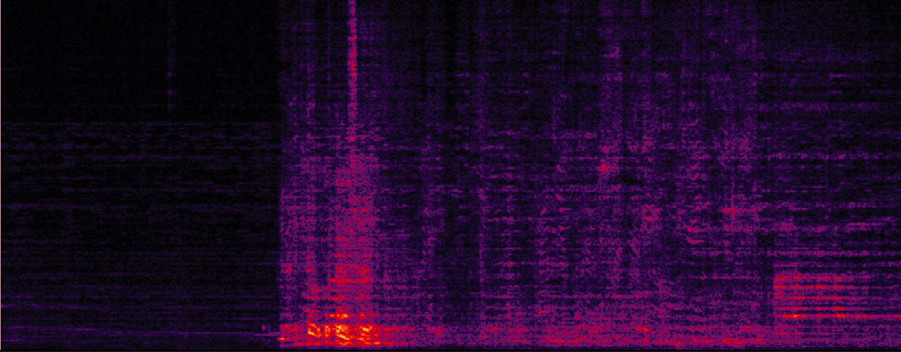
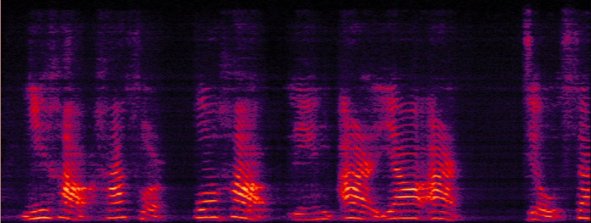

Zoneformer: On-device Neural Beamformer For In-car Multi-zone Speech Separation, Enhancement and Echo Cancellation
Proposed Zoneformer: On-device Neural Beamformer
Figure 1. The system framework includes the full-band complex-valued ratio filter (cRF) based covariance matrix estimator and the proposed on-device Mel-subband neural beamformer with the integration of global spectral and spatial information. The network is optimized in an end-to-end mode using the proposed distortionless constraint loss alongside SiSNR and magnitude L1 losses.
Speakers speaking in Zone1, Zone2, and Zone4 (The speaker in Zone3 is absent in this example. The mixture contains overlapping speech, echo, and noise.)
Reverb Clean Reference (Zone1: S1)
Reverb Clean Reference (Zone2: S2)
Reverb Clean Reference (Zone3: S3)
Reverb Clean Reference (Zone4: S4)
Proposed system (xv) separated (Zone1: S1)
Proposed system (xv) separated (Zone2: S2)
Proposed system (xv) separated (Zone3: S3)
Proposed system (xv) separated (Zone4: S4)
2 Real-world recording demo 1: Separated signals of four car zones by the proposed system (xv).
No Processing (Mixture = S1 + S3 + echo + noise)
Speakers speaking in Zone1 and Zone3 (The speakers in Zone2 and Zone4 are absent in this example. The mixture contains overlapping speech, echo, and noise.)
Proposed system (xv) separated (Zone1: S1)
Proposed system (xv) separated (Zone2: S2)
Proposed system (xv) separated (Zone3: S3)
Proposed system (xv) separated (Zone4: S4)
3 Comparisons with different baselines in the study.
Speakers speaking in Zone2, Zone3 and Zone4 (The speaker in Zone1 is absent in this example. The mixture contains overlapping speech, echo, and noise.)
Reverb Clean Reference (Zone1: S1)
Reverb Clean Reference (Zone2: S2)
Reverb Clean Reference (Zone3: S3)
Reverb Clean Reference (Zone4: S4)

Multi-channel ConvTasNet (Zone1: S1)
Multi-channel ConvTasNet (Zone2: S2)
Multi-channel ConvTasNet (Zone3: S3)
Multi-channel ConvTasNet (Zone4: S4)
Multi-channel LSTM + MHSA (Zone1: S1)
Multi-channel LSTM + MHSA (Zone2: S2)
Multi-channel LSTM + MHSA (Zone3: S3)
Multi-channel LSTM + MHSA (Zone4: S4)
Mel-subband neural BF baseline (system vi in the paper) (Zone1: S1)
Mel-subband neural BF baseline (system vi in the paper) (Zone2: S2)
Mel-subband neural BF baseline (system vi in the paper) (Zone3: S3)
Mel-subband neural BF baseline (system vi in the paper) (Zone4: S4)
Proposed on-device system (xv) (Zone1: S1)
Proposed on-device system (xv) (Zone2: S2)
Proposed on-device system (xv) (Zone3: S3)
Proposed on-device system (xv) (Zone4: S4)
4 Real-world recording demo 2: Separated signals of four car zones by the proposed system (xv).
No Processing (Mixture = S1 + S4 + noise)
Speakers speaking in Zone1 and Zone4 (The speakers in Zone2 and Zone3 are absent in this example. Challenging case: as Zone4 is just behind Zone1 as shown in Fig. 1.)
Proposed system (xv) separated (Zone1: S1)
Proposed system (xv) separated (Zone2: S2)
Proposed system (xv) separated (Zone3: S3)

Proposed system (xv) separated (Zone4: S4)
5 Real-world recording demo 3: Separated signals of four car zones by the proposed system (xv).
No Processing (Mixture = S3 + S4 + noise)
Speakers speaking in Zone3 and Zone4 (The speakers in Zone1 and Zone2 are absent in this example. Challenging case: as Zone3 and Zone4 are both in the back-seats as shown in Fig. 1.)